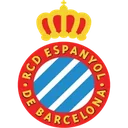

Алавес — Депортиво итог матча 21 ноября
Расчёт модели до матча
- 1,4 : 1,0ожидаемые голы
- 38 %тотал больше 2,5
- 48 %обе забьют
Цифры считает модель по данным сайта, а не эксперт. Это вероятности, а не гарантия исхода. Как считает модель · словарь терминов.
Статистика матча
- 21Удары7
- 8Удары в створ2
- 48 %Владение мячом52 %
- 8Угловые2
Данные ESPN.
- ТурнирЛа Лига
Коротко о матче
Алавес — Депортиво 3:1: хозяева победили. Модель до игры считала самым вероятным исходом победу хозяев (39 %) — так и получилось.
По форме команды были близки: в пяти последних матчах Алавес — ни одной победы, Депортиво — 1 победа. Слабое место — оборона: Алавес — в среднем 2,2 пропущенного мяча за игру в этих пяти матчах.
Стоит учесть и площадку: дома Алавес — 3 победы в 6 матчах, на выезде Депортиво — 1 победа в 6.
Форма: последние матчи
 Алавес 0 побед из 5
Алавес 0 побед из 5
 П1:2
П1:2 П1:2
П1:2 Н1:1
Н1:1- П1:6
 Н0:0
Н0:0
 Депортиво 1 победа из 5
Депортиво 1 победа из 5
 П2:3
П2:3 Н1:1
Н1:1- П0:1
 В2:1
В2:1
Н0:0
Положение в таблице
| Команда | Место | И | В | Н | П | Голы | Очки |
|---|---|---|---|---|---|---|---|
| 8 | 13 | 4 | 4 | 5 | 18:18 | 16 | |
| 11 | 13 | 3 | 6 | 4 | 16:17 | 15 |
Другие матчи Ла Лиги в этот день
Куда дальше
Все прогнозы дня — в TelegramПрогнозы на КХЛ, НХЛ и футбол, итоги каждое утро. Бесплатно.
Открыть каналМатериалы носят информационный характер и не гарантируют результат. Реклама букмекеров на сайте не размещается. Сайт только для совершеннолетних (18+).